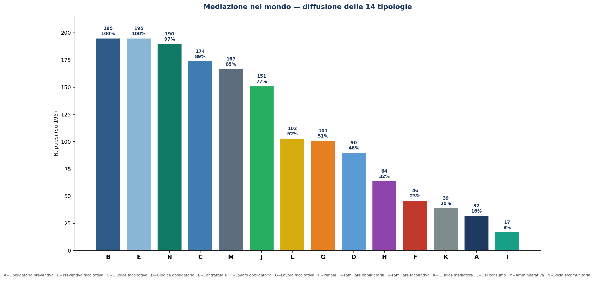
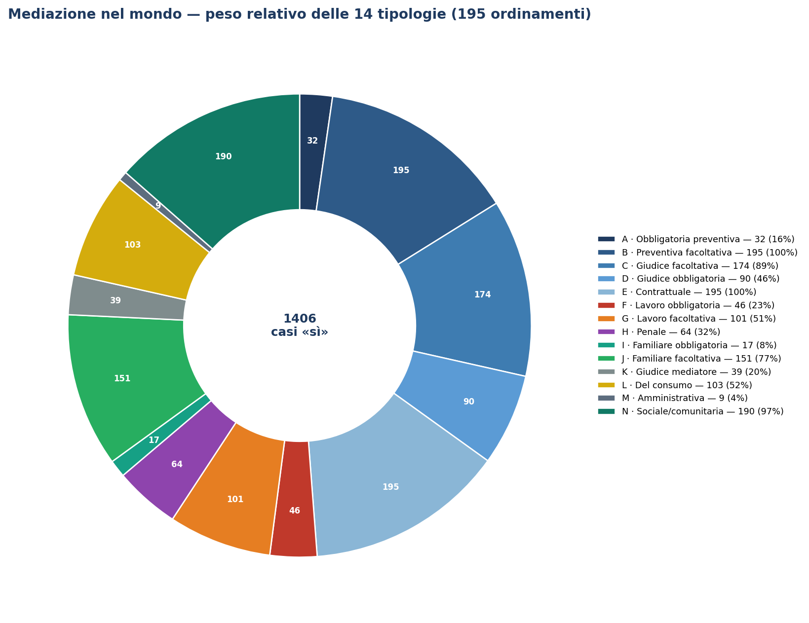
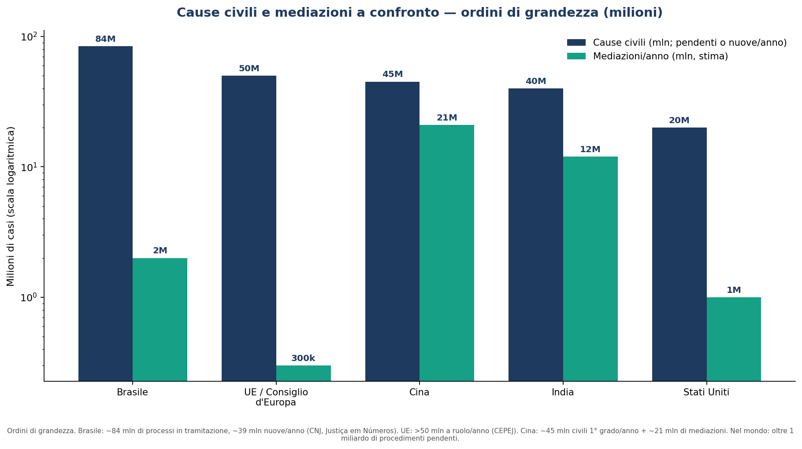

Diritto della mediazione
Fai una domanda su qualunque paese e su ogni tipo di mediazione — civile, commerciale, familiare, penale, del lavoro: la risposta attinge ai 443 atti italiani, alla legislazione di 67 paesi e allo studio «Arbitrato e negoziato in Europa» con gli indirizzi ufficiali
Questo motore attinge alla banca dati normativa dell’archivio — dal d.lgs. 28/2010 e la riforma Cartabia alle direttive europee, fino alla legislazione sulla mediazione di 67 paesi UE ed extra-UE (per es. «quali sono i provvedimenti in materia di mediazione in Bulgaria?») — e compone una trattazione unitaria, scaricabile in Word. In coda, gli atti utilizzati.
📚 Quadro comparato: la mediazione nel mondo, in Europa e in Italia — tutte le tavole commentate
Mediazione e giustizia civile nel mondo, in Europa e in Italia
Un quadro comparato, con tutte le tavole, a introduzione dei profili normativi — di Carlo Alberto Calcagno
Prima di entrare nella legislazione paese per paese, conviene guardare l'insieme. Questo cappello raccoglie e commenta tutte le tavole comparative elaborate su mediareinformati.it: quanti e quali modelli di mediazione esistono nel mondo, dentro quale cornice di processo civile operano, quanti sono i mediatori e quante le mediazioni, dove si colloca l'Italia e come si posiziona la qualità della giustizia civile. Fonti: i 195 profili paese del sito; CEPEJ-STAT 2024.01 (dato 2022); EU Justice Scoreboard 2026; World Justice Project 2025; registri del Ministero della Giustizia.
1. Il mondo: 195 ordinamenti, undici modelli
La mediazione, prima di essere legge, è un gesto universale: la composizione volontaria e quella contrattuale esistono in tutti i 195 ordinamenti. Ciò che varia è come lo Stato la disciplina. Il baricentro si è spostato verso l'aula giudiziaria (174 paesi conoscono il rinvio del giudice, 90 forme obbligatorie), mentre la condizione di procedibilità preventiva resta minoritaria (32). La tavola che segue riassume la diffusione delle undici tipologie.

Tavola 1 — Tipologie di mediazione: totali (195 ordinamenti)
Commento. La familiare (168) e la contrattuale/preventiva facoltativa (195) sono universali o quasi; il lavoro è più spesso facoltativo (101) che obbligatorio (46); la penale, con la giustizia riparativa, raggiunge 64 paesi; il giudice mediatore resta un tratto di 39 ordinamenti.
| Tipologia | N. paesi | % su 195 |
|---|---|---|
| A · Obbligatoria preventiva | 32 | 16% |
| B · Preventiva facoltativa | 195 | 100% |
| C · Giudice facoltativa | 174 | 89% |
| D · Giudice obbligatoria | 90 | 46% |
| E · Contrattuale | 195 | 100% |
| F · Lavoro obbligatoria | 46 | 24% |
| G · Lavoro facoltativa | 101 | 52% |
| H · Penale | 64 | 33% |
| I · Familiare obbligatoria | 17 | 9% |
| J · Familiare facoltativa | 151 | 77% |
| K · Giudice mediatore | 39 | 20% |

Tavola 2 — La cornice: il processo civile
Commento. Tutti gli Stati hanno una giustizia civile, ma non tutti un codice: 140 possiedono un codice di procedura civile, 55 (i sistemi di common law) regolano il giudizio con le Rules of Court. Dove c'è un codice la mediazione vi si innesta come istituto processuale; dove non c'è, vive nel case management del giudice.
| Categoria | N. paesi |
|---|---|
| Con codice di procedura civile codificato | 140 |
| Common law senza codice (rules of court) | 55 |
| Totale | 195 |
2. Quante cause, quante mediazioni
Gli ordini di grandezza rivelano una geografia rovesciata: le cause civili si contano a centinaia di milioni l'anno, le mediazioni a decine di milioni ma concentrate dove sono comunitarie. La Cina compone ~9 milioni di dispute con la mediazione popolare e ne risolve 12 milioni in mediazione pre-contenziosa (40% dei depositi); l'India con i Lok Adalat smaltisce decine di milioni di casi; l'Europa resta sotto l'1% delle cause civili.

Tavola 3 — Cause civili e mediazioni a confronto (stime, milioni/anno)
Commento. Dove la mediazione è comunitaria e istituzionalizzata rivaleggia con il giudizio; dove è professionale e volontaria resta un rivolo accanto al fiume del processo.
| Area | Cause civili/anno | Mediazioni/anno | Note |
|---|---|---|---|
| Cina | ~45–70 mln | ~20+ mln | popolare + pre-contenziosa (~40% dei depositi) |
| India | decine di mln | decine di mln | Lok Adalat (conciliazione di massa) |
| Stati Uniti | ~15–20 mln | n.d. | court-annexed statale, non censita |
| UE / Consiglio d'Europa | ~12–15 mln | poche centinaia di migliaia | < 1% delle cause civili |
| Mondo (ordine di grandezza) | alcune centinaia di mln | decine di mln | dominato da Cina e India |
3. L'Europa: l'Italia in testa per numero, in coda per incentivi
Il database CEPEJ (dato 2022) consegna un primato italiano: 23.561 mediatori, primo in valore assoluto e per numero di mediazioni. Eppure l'EU Justice Scoreboard 2026 colloca l'Italia solo 18ª su 26 per incentivi all'ADR. È il paradosso italiano: molti mediatori e molte procedure (spinte dall'obbligo), ma un sistema percepito come poco incentivante rispetto a Danimarca (1ª con soli 138 mediatori) o Germania (2ª, senza albo nazionale).

Tavola 4 — UE: mediatori, densità e incentivi all'ADR
Commento. La densità (per 100.000 ab.) ridimensiona il primato assoluto: Lussemburgo (40,86) e Italia (40,04) guidano, ma piccoli paesi come la Lituania mostrano forte incentivazione (4ª) pur con numeri contenuti. Non c'è correlazione tra numero di mediatori e incentivi: l'infrastruttura non basta, conta come la si usa.
| Paese | Mediatori (2022) | per 100.000 ab. | ADR 2026 |
|---|---|---|---|
| Italia | 23.561 | 40,04 | 18º |
| Spagna | 10.723 | 22,31 | 3º |
| Romania | 4.357 | 22,87 | 13º |
| Polonia | 4.200 | 11,12 | 6º |
| Grecia | 3.363 | 31,49 | 14º |
| Francia | 2.854 | 4,19 | 5º |
| Belgio | 2.736 | 23,39 | 10º |
| Austria | 1.674 | 18,39 | 16º |
| Slovacchia | 945 | 17,41 | 23º |
| Croazia | 824 | 21,40 | n.d. |
| Paesi Bassi | 768 | 4,31 | 9º |
| Cechia | 712 | 6,56 | 19º |
| Lituania | 688 | 24,08 | 4º |
| Lussemburgo | 270 | 40,86 | 22º |
| Slovenia | 236 | 11,15 | 17º |
| Danimarca | 138 | 2,33 | 1º |
| Ungheria | 136 | 1,42 | 7º |
| Malta | 66 | 12,69 | 24º |
| Lettonia | 48 | 2,55 | 11º |
| Germania | NAP | — | 2º |
| Finlandia | NAP | — | 26º |
| Estonia | NAP | — | 15º |
| Svezia | NAP | — | 20º |
| Bulgaria | n.d. | — | 12º |
| Cipro | n.d. | — | 25º |
| Irlanda | n.d. | — | 21º |
| Portogallo | n.d. | — | 8º |
Fonti: mediatori — CEPEJ-STAT 2024.01 (2022); ranking ADR — EU Justice Scoreboard 2026. NAP = nessun sistema di accreditamento; n.d. = non fornito.
Tavola 5 — UE: mediazioni all'anno e tasso di successo (dati recenti)
Commento. I numeri assoluti confermano il primato italiano (~178.000), ma i tassi di successo variano enormemente col metodo di conteggio: dall'92-98% di Inghilterra e Grecia (misurato sui casi effettivamente mediati) al ~10% polacco (misurato sulle disposte dal giudice). Confrontare i «tassi» senza conoscere il denominatore è fuorviante.
| Paese | Mediazioni/anno | Successo | Fonte/anno |
|---|---|---|---|
| Italia | ~178.182 (2023) | adesione ~46%; accordo ~28% | Min. Giustizia, 2023 |
| Francia | ~43.350 (2021) | 75,2% (giudiziarie) | Min. Justice, 2021 |
| Paesi Bassi | ~51.000 (2019) | 72–80% | Panteia/Raad, 2019–23 |
| Inghilterra e Galles | ~17.000 (2022) | 92% | CEDR Audit, 2022 |
| Polonia | 9.417 disposte (2022) | ~10–11% | Min. Giustizia/IWS, 2022 |
| Slovenia | ~4.711 (court-annexed) | ~50% | Statistiche giud., 2019–23 |
| Lituania | 3.183 familiari (2022) | 54% | Min. Giustizia/STRATA, 2022 |
| Finlandia | ~2.250 (2022) | 70–80% | Min. Giustizia, 2022 |
| Grecia | 685 obbl. + 927 volont. (2022) | 96–98% | Central Mediation Committee, 2022 |
| Rep. Ceca | ~1.700 prime riunioni (2024) | 57–68% | Min. Giustizia, 2024 |
| Danimarca | 516 (2022) | 62,6% | Retsplejerådet, 2022 |
| Croazia | 583 (2023) | 40–52% | Maganić/Kovač, 2023 |
| Lettonia | 389 (2021) | ~70% (fam.) | Min. Giustizia, 2018–21 |
| Estonia | 976 familiari (2024) | ~35% | Social Insurance Board, 2024 |
Tavola 6 — UE: chi tiene il registro dei mediatori
Commento. Il modello prevalente è il registro statale (ministeriale), ma non manca la tenuta da parte delle corti (Danimarca, Francia, Polonia, Slovenia, Svezia) o di enti/ordini professionali (Regno Unito, Irlanda, Paesi Bassi, Estonia). La Germania non ha alcun registro nazionale: il titolo non è protetto.
| Paese | Registro tenuto da |
|---|---|
| Austria | Stato |
| Belgio | Stato |
| Bulgaria | Stato |
| Cipro | Stato |
| Croazia | Stato |
| Danimarca | Corte |
| Estonia | Ordini professionali |
| Finlandia | Stato |
| Francia | Corte (C. d'appello) |
| Germania | Nessun registro nazionale |
| Grecia | Stato |
| Inghilterra e Galles | Ente |
| Irlanda | Ente |
| Irlanda del Nord | Ente |
| Italia | Stato |
| Lettonia | Stato |
| Lituania | Stato |
| Lussemburgo | Stato |
| Malta | Stato |
| Paesi Bassi | Ente |
| Polonia | Corte |
| Portogallo | Stato |
| Repubblica Ceca | Stato |
| Romania | Stato |
| Scozia | Ente |
| Slovacchia | Stato |
| Slovenia | Corte |
| Spagna | Stato |
| Svezia | Corte |
| Ungheria | Stato / Corte |
4. L'Italia: un'infrastruttura che si è dimezzata
Il primato dei numeri nasconde un paradosso interno. Le procedure crescono (~178.000 nel 2023, spinte dall'obbligatorietà e dalla riforma Cartabia), ma l'infrastruttura si è ridotta: resta attivo meno della metà degli organismi e degli enti di formazione nati dal 2010. E dei 22.439 mediatori iscritti non conosciamo neppure la professione: i registri ministeriali non espongono il dato.
Tavola 7 — Italia: i registri ministeriali della mediazione
Commento. La mortalità delle strutture è il dato più eloquente: sopravvive circa il 43% degli organismi mai iscritti (493 su 1.153) e il 42% degli enti di formazione (200 su 481). Per i mediatori il registro non segnala cancellazioni: 22.439 è il numero degli iscritti pubblicati.
| Registro | Iscritti totali | Attivi | Cancellati/sospesi |
|---|---|---|---|
| Organismi di mediazione | 1.153 | 493 | 660 |
| Enti di formazione | 481 | 200 | 281 |
| Mediatori | 22.439 | 22.439* | — |
| Formatori | 1.406 | 1.406* | — |
* Le liste di mediatori e formatori non riportano lo stato di cancellazione. Fonte: registri del Ministero della Giustizia.
Tavola 8 — Italia: organismi attivi per regione (sede legale)
Commento. La distribuzione è fortemente concentrata: Lazio (76), Campania (75), Sicilia (60) e Lombardia (54) raccolgono da soli oltre metà degli organismi attivi, segno di una geografia dell'offerta assai disomogenea.
| Regione | Organismi attivi |
|---|---|
| Lazio | 76 |
| Campania | 75 |
| Sicilia | 60 |
| Lombardia | 54 |
| Toscana | 29 |
| Emilia-Romagna | 29 |
| Puglia | 24 |
| Veneto | 22 |
| Calabria | 21 |
| Piemonte | 18 |
| Abruzzo | 16 |
| Marche | 13 |
| Liguria | 11 |
| Sardegna | 10 |
| Basilicata | 8 |
| Umbria | 7 |
| Friuli-Venezia Giulia | 7 |
| Trentino-Alto Adige | 6 |
| Molise | 2 |
| Valle d'Aosta | 2 |
5. La qualità della giustizia civile (World Justice Project)
Il quadro si chiude con la qualità percepita della giustizia civile secondo il World Justice Project (indice 0-1, media 2015-2025). I paesi nordici ed europei guidano la classifica; è utile ricordare che alta qualità della giustizia ordinaria e forte ricorso alla mediazione non coincidono: la Danimarca è 1ª per giustizia civile ma ha pochissimi mediatori, mentre l'Italia, ricca di mediatori, si colloca più in basso.
Tavola 9 — Giustizia civile nel mondo: prime 30 posizioni (WJP, media 2015-2025)
Commento. La classifica premia trasparenza, tempi e assenza di corruzione: i primi posti sono nordici ed europei, con Singapore e Nuova Zelanda a rappresentare l'area di common law. La tavola completa (144 paesi) è nel file dedicato.
Mostra/nascondi tabella (30 righe)
| Paese | Indice 2025 | Classifica |
|---|---|---|
| Denmark | 0.86 | 1 |
| Norway | 0.86 | 2 |
| Netherlands | 0.82 | 3 |
| Germany | 0.82 | 4 |
| Sweden | 0.83 | 5 |
| Singapore | 0.81 | 6 |
| Finland | 0.80 | 7 |
| Estonia | 0.79 | 8 |
| New Zealand | 0.79 | 9 |
| Lithuania | 0.77 | 10 |
| Japan | 0.76 | 11 |
| Luxembourg | 0.78 | 12 |
| Korea, Rep. | 0.76 | 13 |
| Austria | 0.73 | 14 |
| Australia | 0.74 | 15 |
| Belgium | 0.73 | 16 |
| Hong Kong SAR, China | 0.70 | 17 |
| Ireland | 0.73 | 18 |
| Uruguay | 0.71 | 19 |
| United Kingdom | 0.70 | 20 |
| St. Kitts and Nevis | 0.69 | 21 |
| Canada | 0.67 | 22 |
| Czechia | 0.69 | 22 |
| France | 0.67 | 22 |
| Latvia | 0.71 | 25 |
| Antigua and Barbuda | 0.69 | 26 |
| Portugal | 0.63 | 27 |
| United Arab Emirates | 0.67 | 28 |
| St. Lucia | 0.64 | 29 |
| Spain | 0.65 | 30 |
Appendice — tavole complete (195 ordinamenti)
A1 — Tipologie di mediazione, paese per paese (legenda A–K)
Legenda: A · Obbligatoria preventiva; B · Preventiva facoltativa; C · Giudice facoltativa; D · Giudice obbligatoria; E · Contrattuale; F · Lavoro obbligatoria; G · Lavoro facoltativa; H · Penale; I · Familiare obbligatoria; J · Familiare facoltativa; K · Giudice mediatore.
Mostra/nascondi tabella (195 righe)
| Paese | A | B | C | D | E | F | G | H | I | J | K |
|---|---|---|---|---|---|---|---|---|---|---|---|
| Afghanistan | no | sì | no | no | sì | no | no | no | no | sì | no |
| Albania | no | sì | sì | no | sì | no | sì | sì | no | sì | no |
| Algeria | no | sì | sì | sì | sì | no | no | no | no | sì | no |
| Andorra | no | sì | sì | no | sì | no | sì | no | no | sì | no |
| Angola | no | sì | sì | no | sì | no | sì | no | no | no | no |
| Antigua e Barbuda | no | sì | sì | sì | sì | no | no | no | no | sì | no |
| Arabia Saudita | no | sì | sì | no | sì | no | sì | no | no | sì | no |
| Argentina | sì | sì | sì | sì | sì | sì | no | sì | sì | no | sì |
| Armenia | no | sì | sì | sì | sì | no | no | no | no | sì | no |
| Australia | sì | sì | sì | sì | sì | sì | no | sì | sì | no | no |
| Austria | no | sì | sì | no | sì | no | sì | sì | no | sì | no |
| Azerbaigian | sì | sì | sì | no | sì | no | sì | no | no | sì | no |
| Bahamas | no | sì | sì | sì | sì | no | no | no | no | sì | no |
| Bahrain | no | sì | sì | no | sì | no | sì | no | no | sì | no |
| Bangladesh | no | sì | sì | sì | sì | no | sì | no | no | sì | no |
| Barbados | no | sì | sì | sì | sì | no | no | no | no | sì | no |
| Belgio | no | sì | sì | sì | sì | no | sì | sì | no | sì | sì |
| Belize | no | sì | sì | sì | sì | no | sì | no | no | sì | no |
| Benin | no | sì | sì | no | sì | no | sì | no | no | sì | no |
| Bhutan | no | sì | sì | sì | sì | no | no | no | no | sì | no |
| Bielorussia | no | sì | sì | sì | sì | no | sì | no | no | sì | no |
| Bolivia | sì | sì | sì | no | sì | sì | no | sì | sì | no | no |
| Bosnia ed Erzegovina | no | sì | sì | sì | sì | no | sì | no | sì | no | no |
| Botswana | no | sì | sì | sì | sì | sì | no | no | no | sì | no |
| Brasile | sì | sì | sì | sì | sì | no | sì | sì | no | sì | sì |
| Brunei | no | sì | sì | sì | sì | no | no | no | no | sì | no |
| Bulgaria | no | sì | sì | sì | sì | no | sì | sì | no | sì | no |
| Burkina Faso | no | sì | sì | no | sì | no | sì | no | no | sì | no |
| Burundi | sì | sì | sì | no | sì | sì | no | no | no | no | no |
| Cambogia | no | sì | sì | sì | sì | sì | no | no | no | sì | sì |
| Camerun | no | sì | sì | no | sì | no | sì | no | no | sì | no |
| Canada | sì | sì | sì | sì | sì | no | sì | sì | no | sì | sì |
| Capo Verde | no | sì | sì | no | sì | no | no | no | no | sì | sì |
| Ciad | no | sì | sì | no | sì | no | sì | no | no | sì | no |
| Cile | sì | sì | sì | sì | sì | sì | no | sì | sì | no | sì |
| Cina | no | sì | sì | sì | sì | no | sì | no | no | sì | sì |
| Cipro | no | sì | sì | no | sì | no | sì | sì | no | sì | no |
| Colombia | sì | sì | sì | no | sì | sì | no | sì | sì | no | sì |
| Comore | no | sì | sì | no | sì | no | sì | no | no | sì | no |
| Congo | no | sì | sì | no | sì | no | sì | no | no | sì | no |
| Corea del Nord | no | sì | sì | no | sì | no | no | no | no | no | no |
| Corea del Sud | no | sì | sì | sì | sì | sì | no | no | no | sì | sì |
| Costa Rica | no | sì | sì | no | sì | sì | no | sì | no | sì | no |
| Costa d'Avorio | no | sì | sì | no | sì | no | sì | no | no | sì | no |
| Croazia | no | sì | sì | sì | sì | no | sì | sì | sì | no | no |
| Cuba | no | sì | sì | no | sì | no | sì | no | no | no | sì |
| Danimarca | no | sì | sì | no | sì | no | sì | sì | no | sì | sì |
| Dominica | no | sì | sì | sì | sì | no | no | no | no | sì | no |
| Ecuador | no | sì | sì | no | sì | sì | no | sì | no | sì | no |
| Egitto | no | sì | sì | no | sì | no | sì | no | no | sì | no |
| El Salvador | no | sì | sì | no | sì | sì | no | sì | no | sì | no |
| Emirati Arabi Uniti | no | sì | sì | sì | sì | no | sì | no | no | sì | no |
| Eritrea | no | sì | no | no | sì | no | no | no | no | no | no |
| Estonia | sì | sì | sì | no | sì | no | sì | sì | no | sì | no |
| Eswatini | no | sì | sì | no | sì | sì | no | no | no | sì | no |
| Etiopia | no | sì | sì | no | sì | no | sì | no | no | sì | no |
| Figi | no | sì | sì | sì | sì | no | sì | no | no | no | no |
| Filippine | sì | sì | sì | sì | sì | sì | no | no | sì | no | no |
| Finlandia | no | sì | sì | no | sì | no | sì | sì | no | sì | sì |
| Francia | sì | sì | sì | sì | sì | sì | no | sì | no | sì | sì |
| Gabon | no | sì | sì | no | sì | no | sì | no | no | sì | no |
| Gambia | no | sì | sì | sì | sì | no | no | no | no | no | no |
| Georgia | no | sì | sì | sì | sì | no | no | no | no | sì | no |
| Germania | no | sì | sì | no | sì | sì | no | sì | no | sì | sì |
| Ghana | no | sì | sì | sì | sì | sì | no | no | no | sì | no |
| Giamaica | no | sì | sì | sì | sì | no | sì | no | no | sì | no |
| Giappone | no | sì | sì | no | sì | no | sì | no | no | sì | sì |
| Gibuti | no | sì | no | no | sì | no | no | no | no | no | no |
| Giordania | no | sì | sì | sì | sì | no | sì | no | no | sì | no |
| Grecia | sì | sì | sì | sì | sì | sì | no | sì | sì | no | sì |
| Grenada | no | sì | sì | sì | sì | no | no | no | no | sì | no |
| Guatemala | no | sì | sì | no | sì | sì | no | sì | no | sì | no |
| Guinea | no | sì | sì | no | sì | no | sì | no | no | sì | no |
| Guinea Equatoriale | no | sì | sì | no | sì | no | sì | no | no | sì | no |
| Guinea-Bissau | no | sì | sì | no | sì | no | sì | no | no | sì | no |
| Guyana | no | sì | sì | sì | sì | no | no | no | no | sì | no |
| Haiti | no | sì | sì | no | sì | no | no | no | no | sì | no |
| Honduras | no | sì | sì | no | sì | sì | no | sì | no | sì | no |
| Hong Kong | no | sì | sì | no | sì | no | sì | no | no | sì | no |
| India | sì | sì | sì | sì | sì | sì | no | no | no | sì | sì |
| Indonesia | no | sì | sì | sì | sì | sì | no | no | no | sì | no |
| Iran | sì | sì | sì | no | sì | no | sì | no | no | sì | no |
| Iraq | no | sì | no | no | sì | no | no | no | no | sì | no |
| Irlanda | no | sì | sì | no | sì | no | sì | sì | no | sì | no |
| Islanda | sì | sì | sì | no | sì | no | no | no | sì | no | sì |
| Isole Marshall | no | sì | no | no | sì | no | no | no | no | no | no |
| Isole Salomone | no | sì | no | no | sì | no | no | no | no | no | no |
| Israele | sì | sì | sì | sì | sì | no | sì | no | sì | no | sì |
| Italia | sì | sì | sì | sì | sì | no | sì | sì | no | sì | sì |
| Kazakistan | no | sì | sì | no | sì | no | sì | sì | no | sì | no |
| Kenya | no | sì | sì | sì | sì | sì | no | no | no | sì | no |
| Kirghizistan | no | sì | sì | no | sì | no | sì | sì | no | sì | no |
| Kiribati | no | sì | no | no | sì | no | no | no | no | no | no |
| Kosovo | no | sì | sì | sì | sì | no | sì | sì | no | sì | no |
| Kuwait | no | sì | sì | no | sì | no | no | no | no | sì | no |
| Laos | no | sì | sì | no | sì | no | sì | no | no | sì | no |
| Lesotho | no | sì | sì | no | sì | sì | no | no | no | sì | no |
| Lettonia | no | sì | sì | sì | sì | no | sì | sì | no | sì | no |
| Libano | no | sì | sì | sì | sì | no | sì | no | no | sì | no |
| Liberia | no | sì | sì | sì | sì | no | sì | no | no | no | no |
| Liechtenstein | no | sì | sì | no | sì | no | no | no | no | sì | no |
| Lituania | sì | sì | sì | sì | sì | no | sì | sì | sì | no | no |
| Lussemburgo | no | sì | sì | sì | sì | no | sì | sì | no | sì | sì |
| Macedonia | no | sì | sì | sì | sì | no | sì | no | no | sì | no |
| Madagascar | no | sì | no | no | sì | no | no | no | no | sì | no |
| Malawi | no | sì | sì | sì | sì | sì | no | no | no | sì | no |
| Maldive | no | sì | sì | no | sì | no | no | no | no | sì | no |
| Malesia | no | sì | sì | sì | sì | no | sì | no | no | sì | no |
| Mali | no | sì | sì | no | sì | no | sì | no | no | sì | no |
| Malta | sì | sì | sì | sì | sì | no | sì | no | sì | no | no |
| Marocco | no | sì | sì | no | sì | no | sì | no | no | sì | no |
| Mauritania | no | sì | sì | no | sì | no | sì | no | no | sì | no |
| Mauritius | no | sì | sì | sì | sì | sì | no | no | no | sì | no |
| Messico | sì | sì | sì | no | sì | sì | no | sì | no | sì | sì |
| Moldova | no | sì | sì | no | sì | no | sì | sì | no | sì | no |
| Monaco | no | sì | sì | no | sì | no | sì | no | no | sì | sì |
| Mongolia | no | sì | sì | sì | sì | no | sì | no | no | sì | no |
| Montenegro | no | sì | sì | sì | sì | no | sì | sì | no | sì | no |
| Mozambico | no | sì | sì | no | sì | no | sì | no | no | sì | no |
| Myanmar | no | sì | sì | sì | sì | no | sì | no | no | no | no |
| Namibia | no | sì | sì | sì | sì | sì | no | no | no | sì | no |
| Nauru | no | sì | no | no | sì | no | no | no | no | no | no |
| Nepal | no | sì | sì | sì | sì | no | sì | no | no | sì | no |
| Nicaragua | no | sì | sì | no | sì | sì | no | sì | no | sì | no |
| Niger | no | sì | sì | no | sì | no | sì | no | no | sì | no |
| Nigeria | no | sì | sì | sì | sì | sì | no | no | no | sì | no |
| Norvegia | sì | sì | sì | sì | sì | no | sì | sì | sì | no | sì |
| Nuova Zelanda | sì | sì | sì | sì | sì | sì | no | sì | sì | no | no |
| Oman | no | sì | sì | no | sì | no | no | no | no | sì | no |
| Paesi Bassi | no | sì | sì | no | sì | no | sì | sì | no | sì | no |
| Pakistan | no | sì | sì | sì | sì | no | sì | no | no | sì | no |
| Palau | no | sì | no | no | sì | no | no | no | no | no | no |
| Palestina | no | sì | no | no | sì | no | no | no | no | sì | no |
| Panama | no | sì | sì | no | sì | sì | no | sì | no | sì | no |
| Papua Nuova Guinea | no | sì | sì | sì | sì | no | no | no | no | no | no |
| Paraguay | no | sì | sì | sì | sì | sì | no | sì | no | sì | no |
| Perù | sì | sì | no | no | sì | sì | no | sì | sì | no | no |
| Polonia | no | sì | sì | sì | sì | no | sì | sì | no | sì | no |
| Portogallo | no | sì | sì | sì | sì | sì | no | sì | no | sì | sì |
| Qatar | no | sì | sì | sì | sì | no | sì | no | no | sì | no |
| Regno Unito (Inghilterra e Galles) | sì | sì | sì | no | sì | no | sì | sì | sì | no | no |
| Regno Unito (Irlanda del Nord) | no | sì | sì | no | sì | no | sì | sì | no | sì | no |
| Regno Unito (Scozia) | no | sì | sì | no | sì | no | sì | sì | no | sì | no |
| Repubblica Ceca | no | sì | sì | sì | sì | no | sì | sì | no | sì | no |
| Repubblica Centrafricana | no | sì | sì | no | sì | no | sì | no | no | sì | no |
| Repubblica Democratica del Congo | no | sì | sì | no | sì | no | sì | no | no | sì | no |
| Repubblica Dominicana | no | sì | sì | no | sì | sì | no | sì | no | sì | no |
| Romania | no | sì | sì | no | sì | no | sì | sì | no | sì | no |
| Ruanda | sì | sì | sì | sì | sì | no | sì | no | no | sì | no |
| Russia | no | sì | sì | no | sì | no | sì | no | no | sì | sì |
| Saint Kitts e Nevis | no | sì | sì | sì | sì | no | no | no | no | sì | no |
| Saint Vincent e Grenadine | no | sì | sì | sì | sì | no | no | no | no | sì | no |
| Samoa | no | sì | no | no | sì | no | no | no | no | no | no |
| San Marino | no | sì | sì | no | sì | no | no | no | no | sì | sì |
| Santa Lucia | no | sì | sì | sì | sì | no | no | no | no | sì | no |
| Senegal | no | sì | sì | no | sì | no | sì | no | no | sì | no |
| Serbia | no | sì | sì | sì | sì | no | sì | no | no | sì | no |
| Seychelles | no | sì | sì | sì | sì | no | sì | no | no | no | no |
| Sierra Leone | no | sì | sì | sì | sì | no | sì | no | no | no | no |
| Singapore | no | sì | sì | sì | sì | no | sì | no | no | sì | no |
| Slovacchia | no | sì | sì | no | sì | no | sì | sì | no | sì | no |
| Slovenia | no | sì | sì | sì | sì | no | sì | sì | no | sì | no |
| Somalia | no | sì | no | no | sì | no | no | no | no | no | no |
| Spagna | no | sì | sì | sì | sì | sì | no | sì | no | sì | sì |
| Sri Lanka | sì | sì | sì | no | sì | no | sì | no | no | sì | no |
| Stati Federati di Micronesia | no | sì | no | no | sì | no | no | no | no | no | no |
| Stati Uniti | sì | sì | sì | sì | sì | no | sì | sì | no | sì | sì |
| Sud Sudan | no | sì | no | no | sì | no | no | no | no | no | no |
| Sudafrica | no | sì | sì | sì | sì | sì | no | sì | no | sì | no |
| Sudan | no | sì | no | no | sì | no | no | no | no | sì | no |
| Suriname | no | sì | sì | no | sì | no | no | no | no | sì | no |
| Svezia | no | sì | sì | no | sì | no | sì | sì | no | sì | sì |
| Svizzera | no | sì | sì | no | sì | no | sì | sì | no | sì | sì |
| Tagikistan | no | sì | sì | no | sì | no | no | no | no | no | sì |
| Taiwan | sì | sì | sì | sì | sì | no | sì | no | no | sì | sì |
| Tanzania | no | sì | sì | sì | sì | sì | no | no | no | sì | no |
| Thailandia | sì | sì | sì | sì | sì | no | sì | sì | no | sì | sì |
| Timor Est | no | sì | no | no | sì | no | no | no | no | sì | no |
| Togo | no | sì | sì | no | sì | no | sì | no | no | sì | no |
| Tonga | no | sì | no | no | sì | no | no | no | no | no | no |
| Trinidad e Tobago | no | sì | sì | sì | sì | no | sì | no | no | sì | no |
| Tunisia | no | sì | sì | sì | sì | no | sì | sì | no | sì | no |
| Turchia | sì | sì | sì | no | sì | sì | no | no | no | sì | no |
| Turkmenistan | no | sì | sì | no | sì | no | no | no | no | no | sì |
| Tuvalu | no | sì | no | no | sì | no | no | no | no | no | no |
| Ucraina | no | sì | sì | no | sì | no | sì | sì | no | sì | no |
| Uganda | no | sì | sì | sì | sì | sì | no | no | no | sì | no |
| Ungheria | no | sì | sì | sì | sì | no | sì | sì | no | sì | no |
| Uruguay | sì | sì | sì | no | sì | sì | no | sì | no | sì | sì |
| Uzbekistan | no | sì | sì | no | sì | no | sì | sì | no | sì | no |
| Vanuatu | no | sì | no | no | sì | no | no | no | no | no | no |
| Venezuela | no | sì | sì | sì | sì | sì | no | sì | no | sì | sì |
| Vietnam | no | sì | sì | sì | sì | sì | no | no | no | sì | sì |
| Zambia | no | sì | sì | sì | sì | sì | no | no | no | sì | no |
| Zimbabwe | no | sì | sì | sì | sì | sì | no | no | no | sì | no |
A2 — Processo civile, paese per paese
sì = codice di procedura civile codificato; no = common law (rules of court).
Mostra/nascondi tabella (195 righe)
| Paese | Cod. proc. civ. | Tradizione giuridica |
|---|---|---|
| Afghanistan | sì | Civil law (codice) |
| Albania | sì | Civil law (codice) |
| Algeria | sì | Civil law (codice) |
| Andorra | sì | Civil law (codice) |
| Angola | sì | Civil law (codice) |
| Antigua e Barbuda | no | Common law (rules of court) |
| Arabia Saudita | sì | Civil law (codice) |
| Argentina | sì | Civil law (codice) |
| Armenia | sì | Civil law (codice) |
| Australia | no | Common law (rules of court) |
| Austria | sì | Civil law (codice) |
| Azerbaigian | sì | Civil law (codice) |
| Bahamas | no | Common law (rules of court) |
| Bahrain | sì | Civil law (codice) |
| Bangladesh | sì | Common law (codice codificato) |
| Barbados | no | Common law (rules of court) |
| Belgio | sì | Civil law (codice) |
| Belize | no | Common law (rules of court) |
| Benin | sì | Civil law (codice) |
| Bhutan | sì | Common law (codice codificato) |
| Bielorussia | sì | Civil law (codice) |
| Bolivia | sì | Civil law (codice) |
| Bosnia ed Erzegovina | sì | Civil law (codice) |
| Botswana | no | Misto (rules of court) |
| Brasile | sì | Civil law (codice) |
| Brunei | no | Common law (rules of court) |
| Bulgaria | sì | Civil law (codice) |
| Burkina Faso | sì | Civil law (codice) |
| Burundi | sì | Civil law (codice) |
| Cambogia | sì | Civil law (codice) |
| Camerun | sì | Civil law (codice) |
| Canada | no | Common law (rules of court) |
| Capo Verde | sì | Civil law (codice) |
| Ciad | sì | Civil law (codice) |
| Cile | sì | Civil law (codice) |
| Cina | sì | Civil law (codice) |
| Cipro | sì | Misto (con codice) |
| Colombia | sì | Civil law (codice) |
| Comore | sì | Civil law (codice) |
| Congo | sì | Civil law (codice) |
| Corea del Nord | sì | Civil law (codice) |
| Corea del Sud | sì | Civil law (codice) |
| Costa Rica | sì | Civil law (codice) |
| Costa d'Avorio | sì | Civil law (codice) |
| Croazia | sì | Civil law (codice) |
| Cuba | sì | Civil law (codice) |
| Danimarca | sì | Civil law (codice) |
| Dominica | no | Common law (rules of court) |
| Ecuador | sì | Civil law (codice) |
| Egitto | sì | Civil law (codice) |
| El Salvador | sì | Civil law (codice) |
| Emirati Arabi Uniti | sì | Civil law (codice) |
| Eritrea | sì | Civil law (codice) |
| Estonia | sì | Civil law (codice) |
| Eswatini | no | Misto (rules of court) |
| Etiopia | sì | Civil law (codice) |
| Figi | no | Common law (rules of court) |
| Filippine | sì | Civil law (codice) |
| Finlandia | sì | Civil law (codice) |
| Francia | sì | Civil law (codice) |
| Gabon | sì | Civil law (codice) |
| Gambia | no | Common law (rules of court) |
| Georgia | sì | Civil law (codice) |
| Germania | sì | Civil law (codice) |
| Ghana | no | Common law (rules of court) |
| Giamaica | no | Common law (rules of court) |
| Giappone | sì | Civil law (codice) |
| Gibuti | sì | Civil law (codice) |
| Giordania | sì | Civil law (codice) |
| Grecia | sì | Civil law (codice) |
| Grenada | no | Common law (rules of court) |
| Guatemala | sì | Civil law (codice) |
| Guinea | sì | Civil law (codice) |
| Guinea Equatoriale | sì | Civil law (codice) |
| Guinea-Bissau | sì | Civil law (codice) |
| Guyana | no | Misto (rules of court) |
| Haiti | sì | Civil law (codice) |
| Honduras | sì | Civil law (codice) |
| Hong Kong | no | Common law (rules of court) |
| India | sì | Common law (codice codificato) |
| Indonesia | sì | Civil law (codice) |
| Iran | sì | Civil law (codice) |
| Iraq | sì | Civil law (codice) |
| Irlanda | no | Common law (rules of court) |
| Islanda | sì | Civil law (codice) |
| Isole Marshall | no | Common law (rules of court) |
| Isole Salomone | no | Common law (rules of court) |
| Israele | no | Misto (rules of court) |
| Italia | sì | Civil law (codice) |
| Kazakistan | sì | Civil law (codice) |
| Kenya | no | Common law (rules of court) |
| Kirghizistan | sì | Civil law (codice) |
| Kiribati | no | Common law (rules of court) |
| Kosovo | sì | Civil law (codice) |
| Kuwait | sì | Civil law (codice) |
| Laos | sì | Civil law (codice) |
| Lesotho | no | Misto (rules of court) |
| Lettonia | sì | Civil law (codice) |
| Libano | sì | Civil law (codice) |
| Liberia | no | Common law (rules of court) |
| Liechtenstein | sì | Civil law (codice) |
| Lituania | sì | Civil law (codice) |
| Lussemburgo | sì | Civil law (codice) |
| Macedonia | sì | Civil law (codice) |
| Madagascar | sì | Civil law (codice) |
| Malawi | no | Common law (rules of court) |
| Maldive | sì | Civil law (codice) |
| Malesia | no | Common law (rules of court) |
| Mali | sì | Civil law (codice) |
| Malta | sì | Misto (con codice) |
| Marocco | sì | Civil law (codice) |
| Mauritania | sì | Civil law (codice) |
| Mauritius | no | Misto (rules of court) |
| Messico | sì | Civil law (codice) |
| Moldova | sì | Civil law (codice) |
| Monaco | sì | Civil law (codice) |
| Mongolia | sì | Civil law (codice) |
| Montenegro | sì | Civil law (codice) |
| Mozambico | sì | Civil law (codice) |
| Myanmar | sì | Common law (codice codificato) |
| Namibia | no | Misto (rules of court) |
| Nauru | no | Common law (rules of court) |
| Nepal | sì | Common law (codice codificato) |
| Nicaragua | sì | Civil law (codice) |
| Niger | sì | Civil law (codice) |
| Nigeria | no | Common law (rules of court) |
| Norvegia | sì | Civil law (codice) |
| Nuova Zelanda | no | Common law (rules of court) |
| Oman | sì | Civil law (codice) |
| Paesi Bassi | sì | Civil law (codice) |
| Pakistan | sì | Common law (codice codificato) |
| Palau | no | Common law (rules of court) |
| Palestina | sì | Civil law (codice) |
| Panama | sì | Civil law (codice) |
| Papua Nuova Guinea | no | Common law (rules of court) |
| Paraguay | sì | Civil law (codice) |
| Perù | sì | Civil law (codice) |
| Polonia | sì | Civil law (codice) |
| Portogallo | sì | Civil law (codice) |
| Qatar | sì | Civil law (codice) |
| Regno Unito (Inghilterra e Galles) | no | Common law (rules of court) |
| Regno Unito (Irlanda del Nord) | no | Common law (rules of court) |
| Regno Unito (Scozia) | no | Misto (rules of court) |
| Repubblica Ceca | sì | Civil law (codice) |
| Repubblica Centrafricana | sì | Civil law (codice) |
| Repubblica Democratica del Congo | sì | Civil law (codice) |
| Repubblica Dominicana | sì | Civil law (codice) |
| Romania | sì | Civil law (codice) |
| Ruanda | sì | Civil law (codice) |
| Russia | sì | Civil law (codice) |
| Saint Kitts e Nevis | no | Common law (rules of court) |
| Saint Vincent e Grenadine | no | Common law (rules of court) |
| Samoa | no | Common law (rules of court) |
| San Marino | sì | Civil law (codice) |
| Santa Lucia | no | Common law (rules of court) |
| Senegal | sì | Civil law (codice) |
| Serbia | sì | Civil law (codice) |
| Seychelles | no | Misto (rules of court) |
| Sierra Leone | no | Common law (rules of court) |
| Singapore | no | Common law (rules of court) |
| Slovacchia | sì | Civil law (codice) |
| Slovenia | sì | Civil law (codice) |
| Somalia | sì | Civil law (codice) |
| Spagna | sì | Civil law (codice) |
| Sri Lanka | sì | Common law (codice codificato) |
| Stati Federati di Micronesia | no | Common law (rules of court) |
| Stati Uniti | no | Common law (rules of court) |
| Sud Sudan | sì | Civil law (codice) |
| Sudafrica | no | Misto (rules of court) |
| Sudan | sì | Misto (con codice) |
| Suriname | sì | Civil law (codice) |
| Svezia | sì | Civil law (codice) |
| Svizzera | sì | Civil law (codice) |
| Tagikistan | sì | Civil law (codice) |
| Taiwan | sì | Civil law (codice) |
| Tanzania | no | Common law (rules of court) |
| Thailandia | sì | Civil law (codice) |
| Timor Est | sì | Civil law (codice) |
| Togo | sì | Civil law (codice) |
| Tonga | no | Common law (rules of court) |
| Trinidad e Tobago | no | Common law (rules of court) |
| Tunisia | sì | Civil law (codice) |
| Turchia | sì | Civil law (codice) |
| Turkmenistan | sì | Civil law (codice) |
| Tuvalu | no | Common law (rules of court) |
| Ucraina | sì | Civil law (codice) |
| Uganda | no | Common law (rules of court) |
| Ungheria | sì | Civil law (codice) |
| Uruguay | sì | Civil law (codice) |
| Uzbekistan | sì | Civil law (codice) |
| Vanuatu | no | Common law (rules of court) |
| Venezuela | sì | Civil law (codice) |
| Vietnam | sì | Civil law (codice) |
| Zambia | no | Common law (rules of court) |
| Zimbabwe | no | Misto (rules of court) |
A3 — Mediatori e registri, paese per paese
n.d. = nessun conteggio ufficiale pubblico (consultare il registro).
Mostra/nascondi tabella (195 righe)
| Paese | N. stimato | Autorità / registro | URL |
|---|---|---|---|
| Afghanistan | n.d. | Nessun registro nazionale noto | |
| Albania | n.d. | Dhoma Kombëtare e Ndërmjetësve | https://www.dhkndermjetesit.al |
| Algeria | n.d. | Nessun registro nazionale noto | |
| Andorra | n.d. | Nessun registro nazionale noto | |
| Angola | n.d. | Nessun registro nazionale noto | |
| Antigua e Barbuda | n.d. | Nessun registro nazionale noto | |
| Arabia Saudita | n.d. | Saudi Center for Commercial Arbitration (SCCA) — mediatori accreditati | https://www.sadr.org |
| Argentina | ~ 8.000 | Registro Nacional de Mediación — Min. Justicia | https://www.argentina.gob.ar/justicia/mediacion |
| Armenia | n.d. | Registro dei mediatori — Ministero della Giustizia | https://www.moj.am |
| Australia | ~ 4.500 | Mediator Standards Board — NMAS accredited mediators | https://msb.org.au |
| Austria | ~ 3.000 | Liste der eingetragenen Mediatoren — Bundesministerium für Justiz | https://mediatoren.justiz.gv.at |
| Azerbaigian | n.d. | Mediasiya Şurası (Consiglio di mediazione) | https://mediation.az |
| Bahamas | n.d. | Nessun registro nazionale noto | |
| Bahrain | n.d. | Bahrain Chamber for Dispute Resolution (BCDR) | https://www.bcdr.org |
| Bangladesh | n.d. | Nessun registro nazionale noto | |
| Barbados | n.d. | Nessun registro nazionale noto | |
| Belgio | ~ 1.500 | Commission fédérale de médiation — médiateurs agréés | https://www.cfm-fbc.be |
| Belize | n.d. | Nessun registro nazionale noto | |
| Benin | n.d. | Nessun registro nazionale noto | |
| Bhutan | n.d. | Nessun registro nazionale noto | |
| Bielorussia | n.d. | Nessun registro nazionale noto | |
| Bolivia | n.d. | Centros de conciliación — Min. de Justicia | |
| Bosnia ed Erzegovina | n.d. | Udruženje medijatora u BiH | https://umbih.co.ba |
| Botswana | n.d. | Nessun registro nazionale noto | |
| Brasile | n.d. | CNJ — cadastro de mediadores e conciliadores (CEJUSC) | https://www.cnj.jus.br |
| Brunei | n.d. | Nessun registro nazionale noto | |
| Bulgaria | ~ 3.500 | Единен регистър на медиаторите — Min. Giustizia | https://mediator.mjs.bg |
| Burkina Faso | n.d. | Nessun registro nazionale noto | |
| Burundi | n.d. | Nessun registro nazionale noto | |
| Cambogia | n.d. | Nessun registro nazionale noto | |
| Camerun | n.d. | Nessun registro nazionale noto | |
| Canada | n.d. | ADR Institute of Canada; Family Mediation Canada | https://adric.ca |
| Capo Verde | n.d. | Nessun registro nazionale noto | |
| Ciad | n.d. | Nessun registro nazionale noto | |
| Cile | ~ 500 (familiare) | Registro de Mediadores — Unidad de Mediación, Min. Justicia | https://www.mediacionchile.cl |
| Cina | milioni di mediatori popolari | Comitati di mediazione popolare (人民调解委员会) — locali | |
| Cipro | n.d. | Μητρώο Διαμεσολαβητών — Υπ. Δικαιοσύνης | https://www.mjpo.gov.cy |
| Colombia | n.d. | SICAAC — Sistema de Información de Conciliación, Min. Justicia | https://www.sicaac.gov.co |
| Comore | n.d. | Nessun registro nazionale noto | |
| Congo | n.d. | Nessun registro nazionale noto | |
| Corea del Nord | n.d. | Nessun registro nazionale noto | |
| Corea del Sud | n.d. | Korea Commercial Arbitration Board; comitati di conciliazione | https://www.kcab.or.kr |
| Costa Rica | n.d. | Nessun registro nazionale noto | |
| Costa d'Avorio | n.d. | Nessun registro nazionale noto | |
| Croazia | n.d. | Registar izmiritelja — Ministarstvo pravosuđa | https://mpu.gov.hr |
| Cuba | n.d. | Nessun registro nazionale noto | |
| Danimarca | n.d. | Retsmægling (domstolene); Mediatoradvokater | https://www.domstol.dk |
| Dominica | n.d. | Nessun registro nazionale noto | |
| Ecuador | n.d. | Centros de mediación — Consejo de la Judicatura | https://www.funcionjudicial.gob.ec |
| Egitto | n.d. | Cairo Regional Centre for International Commercial Arbitration (CRCICA) | https://crcica.org |
| El Salvador | n.d. | Nessun registro nazionale noto | |
| Emirati Arabi Uniti | n.d. | Ministero della Giustizia — mediatori accreditati; DIFC/ADGM | https://www.moj.gov.ae |
| Eritrea | n.d. | Nessun registro nazionale noto | |
| Estonia | n.d. | Perelepitusteenuse register; lepitajad | https://sotsiaalkindlustusamet.ee |
| Eswatini | n.d. | Nessun registro nazionale noto | |
| Etiopia | n.d. | Nessun registro nazionale noto | |
| Figi | n.d. | Nessun registro nazionale noto | |
| Filippine | n.d. | Philippine Mediation Center — Office for ADR (OADR) | https://oadr.doj.gov.ph |
| Finlandia | n.d. | Tuomioistuinsovittelu; rikosasioiden sovittelu (THL) | https://thl.fi |
| Francia | n.d. | Listes des médiateurs delle Cours d'appel; Conseil National de la Médiation (2023) | https://www.justice.fr |
| Gabon | n.d. | Nessun registro nazionale noto | |
| Gambia | n.d. | Nessun registro nazionale noto | |
| Georgia | n.d. | Association of Mediators of Georgia | https://mediators.ge |
| Germania | ~ diverse migliaia | Nessun registro nazionale (titolo non protetto) | |
| Ghana | n.d. | ADR Secretariat — Judicial Service | https://www.judicial.gov.gh |
| Giamaica | n.d. | Nessun registro nazionale noto | |
| Giappone | n.d. | ADR認証 — Ministry of Justice (organismi certificati) | https://www.moj.go.jp/KANBOU/ADR |
| Gibuti | n.d. | Nessun registro nazionale noto | |
| Giordania | n.d. | Centri di mediazione giudiziale — Ministero della Giustizia | https://www.moj.gov.jo |
| Grecia | ~ 2.000 | Μητρώο Διαμεσολαβητών — Υπουργείο Δικαιοσύνης | https://www.diamesolavisi.gov.gr |
| Grenada | n.d. | Nessun registro nazionale noto | |
| Guatemala | n.d. | Nessun registro nazionale noto | |
| Guinea | n.d. | Nessun registro nazionale noto | |
| Guinea Equatoriale | n.d. | Nessun registro nazionale noto | |
| Guinea-Bissau | n.d. | Nessun registro nazionale noto | |
| Guyana | n.d. | Nessun registro nazionale noto | |
| Haiti | n.d. | Nessun registro nazionale noto | |
| Honduras | n.d. | Nessun registro nazionale noto | |
| Hong Kong | ~ 2.500 | Hong Kong Mediation Accreditation Association Ltd (HKMAAL) | https://www.hkmaal.org.hk |
| India | n.d. | Mediation Council of India (in costituzione); MCPC / IIAM | https://www.mcpc.gov.in |
| Indonesia | n.d. | Pusat Mediasi Nasional (PMN); mediatori certificati (PERMA 1/2016) | https://pmn.or.id |
| Iran | n.d. | Nessun registro nazionale noto | |
| Iraq | n.d. | Nessun registro nazionale noto | |
| Irlanda | ~ 1.000 | Mediators' Institute of Ireland (MII) | https://www.themii.ie |
| Islanda | n.d. | Nessun registro nazionale noto | |
| Isole Marshall | n.d. | Nessun registro nazionale noto | |
| Isole Salomone | n.d. | Nessun registro nazionale noto | |
| Israele | n.d. | Battei mishpat — rechimat mefashrim (liste dei tribunali) | https://www.gov.il |
| Italia | ~15.000 (in organismi) | Ministero della Giustizia — Registro degli organismi e elenco dei mediatori | https://www.giustizia.it/giustizia/it/mg_1_12_1.page |
| Kazakistan | n.d. | Registro repubblicano dei mediatori; organizzazioni | |
| Kenya | n.d. | Mediation Accreditation Committee (MAC) — Judiciary | https://mac.judiciary.go.ke |
| Kirghizistan | n.d. | Republican register; organizzazioni di mediatori | |
| Kiribati | n.d. | Nessun registro nazionale noto | |
| Kosovo | n.d. | Komisioni për Ndërmjetësim — Ministria e Drejtësisë | https://md.rks-gov.net |
| Kuwait | n.d. | Nessun registro nazionale noto | |
| Laos | n.d. | Nessun registro nazionale noto | |
| Lesotho | n.d. | Nessun registro nazionale noto | |
| Lettonia | n.d. | Sertificētu mediatoru padome | https://www.mediacija.lv |
| Libano | n.d. | Centre professionnel de médiation (CPM) — USJ | https://www.cpm-usj.org |
| Liberia | n.d. | Nessun registro nazionale noto | |
| Liechtenstein | n.d. | Nessun registro nazionale noto | |
| Lituania | n.d. | Mediatorių sąrašas — Teisingumo ministerija/VGTPT | https://mediacija.vgtpt.lt |
| Lussemburgo | n.d. | Médiateurs agréés — Ministère de la Justice | https://mj.gouvernement.lu |
| Macedonia | n.d. | Регистар на медијатори — Министерство за правда | https://www.pravda.gov.mk |
| Madagascar | n.d. | Nessun registro nazionale noto | |
| Malawi | n.d. | Nessun registro nazionale noto | |
| Maldive | n.d. | Nessun registro nazionale noto | |
| Malesia | n.d. | Malaysian Mediation Centre — Bar Council Malaysia | https://www.malaysianbar.org.my |
| Mali | n.d. | Nessun registro nazionale noto | |
| Malta | n.d. | Malta Mediation Centre | https://mediation.mt |
| Marocco | n.d. | Centres de médiation (CIMAR/CMAC des CCIS) — Loi 95-17 | https://www.cmac.ma |
| Mauritania | n.d. | Nessun registro nazionale noto | |
| Mauritius | n.d. | MARC — MCCI Arbitration and Mediation Center | https://www.marc.mu |
| Messico | n.d. | Centros de Justicia Alternativa (registri statali) | |
| Moldova | n.d. | Consiliul de Mediere | https://mediere.gov.md |
| Monaco | n.d. | Nessun registro nazionale noto | |
| Mongolia | n.d. | Nessun registro nazionale noto | |
| Montenegro | n.d. | Centar za alternativno rješavanje sporova | https://www.posredovanje.me |
| Mozambico | n.d. | Nessun registro nazionale noto | |
| Myanmar | n.d. | Nessun registro nazionale noto | |
| Namibia | n.d. | Nessun registro nazionale noto | |
| Nauru | n.d. | Nessun registro nazionale noto | |
| Nepal | n.d. | Mediation Council — Government of Nepal | https://mediationcouncil.gov.np |
| Nicaragua | n.d. | Nessun registro nazionale noto | |
| Niger | n.d. | Nessun registro nazionale noto | |
| Nigeria | n.d. | Multi-Door Courthouses; Institute of Chartered Mediators | https://icmc.ng |
| Norvegia | n.d. | Konfliktrådene (SNM); familievernkontor | https://www.konfliktraadet.no |
| Nuova Zelanda | n.d. | Resolution Institute; AMINZ | https://www.resolution.institute |
| Oman | n.d. | Nessun registro nazionale noto | |
| Paesi Bassi | ~ 2.700 | MfN-register (Mediatorsfederatie Nederland) | https://mfnregister.nl |
| Pakistan | n.d. | Nessun registro nazionale noto | |
| Palau | n.d. | Nessun registro nazionale noto | |
| Palestina | n.d. | Nessun registro nazionale noto | |
| Panama | n.d. | Nessun registro nazionale noto | |
| Papua Nuova Guinea | n.d. | Nessun registro nazionale noto | |
| Paraguay | n.d. | Nessun registro nazionale noto | |
| Perù | n.d. | Registro de Conciliadores — Min. de Justicia (DConciliación) | https://www.gob.pe/minjus |
| Polonia | n.d. | Listy stałych mediatorów presso i Sądy Okręgowe | https://www.gov.pl/web/sprawiedliwosc |
| Portogallo | n.d. | Sistemas públicos de mediação — Ministério da Justiça (DGPJ) | https://dgpj.justica.gov.pt |
| Qatar | n.d. | Qatar International Court (QICDRC) — mediatori accreditati | https://www.qicdrc.gov.qa |
| Regno Unito (Inghilterra e Galles) | ~ 500 org./migliaia | Civil Mediation Council; Family Mediation Council | https://civilmediation.org |
| Regno Unito (Irlanda del Nord) | n.d. | Mediation Northern Ireland; MII | https://www.mediationnorthernireland.org |
| Regno Unito (Scozia) | ~ 600 | Scottish Mediation Register | https://www.scottishmediation.org.uk |
| Repubblica Ceca | n.d. | Seznam mediátorů — Ministerstvo spravedlnosti; ČAK | https://mediatori.justice.cz |
| Repubblica Centrafricana | n.d. | Nessun registro nazionale noto | |
| Repubblica Democratica del Congo | n.d. | Nessun registro nazionale noto | |
| Repubblica Dominicana | n.d. | Nessun registro nazionale noto | |
| Romania | ~ 9.000 | Consiliul de Mediere — Tabloul mediatorilor | https://www.cmediere.ro |
| Ruanda | n.d. | Nessun registro nazionale noto | |
| Russia | n.d. | Nessun registro federale unico; elenchi delle organizzazioni | |
| Saint Kitts e Nevis | n.d. | Nessun registro nazionale noto | |
| Saint Vincent e Grenadine | n.d. | Nessun registro nazionale noto | |
| Samoa | n.d. | Nessun registro nazionale noto | |
| San Marino | n.d. | Nessun registro nazionale noto | |
| Santa Lucia | n.d. | Nessun registro nazionale noto | |
| Senegal | n.d. | Nessun registro nazionale noto | |
| Serbia | ~ 1.200 | Registar posrednika — Ministarstvo pravde | https://www.mpravde.gov.rs |
| Seychelles | n.d. | Nessun registro nazionale noto | |
| Sierra Leone | n.d. | Nessun registro nazionale noto | |
| Singapore | n.d. | Singapore International Mediation Institute (SIMI); SMC | https://www.simi.org.sg |
| Slovacchia | ~ 1.000 | Register mediátorov — Ministerstvo spravodlivosti SR | https://www.justice.gov.sk |
| Slovenia | n.d. | Centralna evidenca mediatorjev — Ministrstvo za pravosodje | https://www.gov.si |
| Somalia | n.d. | Nessun registro nazionale noto | |
| Spagna | ~ alcune migliaia | Registro de Mediadores e Instituciones de Mediación — Min. Justicia | https://remediabuscador.mjusticia.gob.es |
| Sri Lanka | migliaia (boards) | Mediation Boards Commission of Sri Lanka | https://www.mediationboards.gov.lk |
| Stati Federati di Micronesia | n.d. | Nessun registro nazionale noto | |
| Stati Uniti | n.d. | Nessun registro nazionale; roster statali e ABA | https://www.americanbar.org/groups/dispute_resolution |
| Sud Sudan | n.d. | Nessun registro nazionale noto | |
| Sudafrica | n.d. | DiMBA; FAMAC (familiare); CCMA (lavoro) | https://ccma.org.za |
| Sudan | n.d. | Nessun registro nazionale noto | |
| Suriname | n.d. | Nessun registro nazionale noto | |
| Svezia | n.d. | Domstolsverket (medlare); ingen central registrering | https://www.domstol.se |
| Svizzera | ~ 1.800 | SDM-FSM; SAV/FSA; associazioni cantonali | https://www.swiss-mediators.org |
| Tagikistan | n.d. | Nessun registro nazionale noto | |
| Taiwan | migliaia (comitati comunali) | Comitati di mediazione comunali (鄉鎮市調解委員會) | |
| Tanzania | n.d. | Nessun registro nazionale noto | |
| Thailandia | n.d. | Thailand Arbitration Center (THAC); mediazione giudiziale | https://thac.or.th |
| Timor Est | n.d. | Nessun registro nazionale noto | |
| Togo | n.d. | Nessun registro nazionale noto | |
| Tonga | n.d. | Nessun registro nazionale noto | |
| Trinidad e Tobago | n.d. | Nessun registro nazionale noto | |
| Tunisia | n.d. | Centre de Conciliation et d'Arbitrage de Tunis (CCAT) | https://www.ccat.org.tn |
| Turchia | ~ 30.000 | Arabulucular Sicili — Adalet Bakanlığı, Arabuluculuk Daire Bşk. | https://adb.adalet.gov.tr |
| Turkmenistan | n.d. | Nessun registro nazionale noto | |
| Tuvalu | n.d. | Nessun registro nazionale noto | |
| Ucraina | n.d. | Національна асоціація медіаторів України (НАМУ) | https://namu.com.ua |
| Uganda | n.d. | Nessun registro nazionale noto | |
| Ungheria | n.d. | Közvetítők névjegyzéke — Igazságügyi Minisztérium | https://kozvetito.im.gov.hu |
| Uruguay | n.d. | Centros de Mediación del Poder Judicial / MEC | https://www.gub.uy |
| Uzbekistan | n.d. | Registro dei mediatori — Min. Giustizia | https://www.minjust.uz |
| Vanuatu | n.d. | Nessun registro nazionale noto | |
| Venezuela | n.d. | Nessun registro nazionale noto | |
| Vietnam | n.d. | Vietnam Mediation Centre (VMC) — VIAC | https://www.viac.vn |
| Zambia | n.d. | Nessun registro nazionale noto | |
| Zimbabwe | n.d. | Nessun registro nazionale noto |